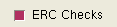

Command type: Customization command for Calibre Interactive.
In Calibre Interactive nmLVS, the CUSTOM::CHECK command initializes the check selection status in the Select Checks dialog box for ERC checks in Calibre Interactive nmLVS.
In Calibre Interactive nmDRC or Calibre Interactive DFM, the Check Selection Recipe is the preferred method for selecting the rule checks that are evaluated.
CUSTOM::CHECK {-name var_name | ‑choices choices_list [-initval init_value]}
[-prompt prompt_text] [‑tooltip tooltip_string]
[-boolean {0|1}] [-select {0|1}] [-enable {0|1}] [-display {0|1}]
[-tool { DRC | LVS | DFM | tool_list }]
[ {{-master master_spec} [‑master_select {0 | 1}]} | ‑master_expr expr_spec ]
A required argument that specifies the name of the rule check. Either the ‑name or ‑choices keyword must be specified.
A rule check name may be preceded by an exclamation point (!) to specify that the check is unselected. The exclamation point (!) is also called the negation character.
A checkbox is displayed unless “‑boolean 0” is specified.
A required argument that specify a list of choices, where the parameter choices_list is a Tcl list of rule check names. Either the ‑name or ‑choices keyword must be specified.
A rule check name may be preceded by an exclamation point (!) to specify that the check is unselected.
A checkbox is displayed only if “‑boolean 1” is specified.
If a multi-element list is specified with the ‑choices switch, a button with a dropdown list is displayed. The values are displayed as mutually exclusive radio buttons.
The choices_list can be specified as one of the following:
A Tcl list of single elements, where each element is the name of a rule check. For a list of single elements, the elements themselves are displayed as the label for the radio buttons.
A Tcl list of two-element sublists. The first element is displayed as a label for the radio button and the second element is the name of the rule check.
For example:
{{"Check A" A} {"Not check C" !C}} where the braces are literal to indicate a Tcl list.
An optional argument that specifies the default value from the ‑choices list.
The init_value is read and applied the first time the Customization GUI is opened or if the customization file changes; however, init_value is overridden with the runset value if the runset option cmnCustomFileOverrideValues specifies a value for the control.
The init_value is always applied if the Customization GUI is opened using the Load button in the Customization Settings dialog box; the runset value specified with the runset option cmnCustomFileOverrideValues is not used in this case.
Places the string prompt_text next to the button or checkbox.
Specifies a tooltip tooltip_string for the control. Line breaks in tooltip_string are preserved in the generated tooltip.
Controls the display of the checkbox, where 1 specifies to display the checkbox. See the ‑name and -choices options for the behavior if this option is not specified.
Controls the initial setting of the ‑boolean checkbox. The default value is 1 (true) if this option is not specified.
Controls whether the ‑boolean checkbox is active (responds to user input). The default value is 1 (true) if this option is not specified.
Controls whether the control is displayed in the customization dialog box. The default value is 1 (true) if this option is not specified.
If included, the statement applies only to the specified tool(s). To specify more than one tool, provide a Tcl list; for example: {DRC DFM}
If this option is not specified, the command applies to all supported tools.
An optional keyword and parameter set that specifies the current control as a dependent control to another primary control in the customization file. In other words, this option specifies that the appearance of this GUI object in the customization window depends on the value of another control referenced by master_spec or expr_spec.
See “Primary-Dependent Commands” for a complete description of using the ‑master option.
In Calibre Interactive nmLVS, the CUSTOM::CHECK statement initializes the check selection status in the Figure 1 for ERC checks. The CUSTOM::CHECK statement includes options to display a checkbox, a prompt, and a button with a dropdown list. The appropriate [Un]Select Check statement for the application is written to the Calibre Interactive control file.
When using Calibre Interactive nmDRC or Calibre Interactive DFM, the Check Selection Recipe is the preferred method for selecting the rule checks that are evaluated during the run.
However, if you do use CUSTOM::CHECK controls in a Customization GUI for Calibre Interactive nmDRC or DFM, make sure that the “Checks selected in the rules file” built-in check recipe is selected, as described in “Precedence of CUSTOM::CHECK Controls and Check Selection in Calibre Interactive”.
Table 1 shows the selection status of a check for the possible combinations of checkbox state and the presence of the negation symbol (!) for the check.
-boolean |
‑selected |
Check |
Check state |
|---|---|---|---|
1 |
1 |
A |
Selected |
1 |
1 |
!A |
Unselected |
1 |
0 |
A |
Unselected |
1 |
0 |
!A |
Unselected |
The following example selects the erc_check rule check. It places a checkbox in the Customization GUI for Calibre Interactive nmLVS and displays an “ERC Checks” prompt next to the checkbox.
CUSTOM::CHECK ‑name erc_check -boolean 1 -prompt "ERC Checks" \ -tool LVS
This creates the following checkbox, with “ERC Checks” as the prompt:
